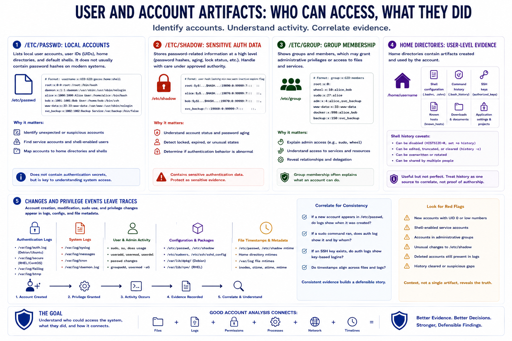

User and Account Artifacts
Connecting to LMS... Progress: in progress

Narration
User and account artifacts help analysts understand who could access the system and what activity may be tied to specific accounts. The /etc/passwd file commonly lists local user accounts, user identifiers, home directories, and default shells. It does not usually contain password hashes on modern systems, but it is still valuable for identifying unexpected accounts, service users, and shell-enabled users.
/etc/shadow stores sensitive password-related information at a high level and should be handled carefully under approved authority. Analysts may use it to understand account status, password aging, or whether an account has an unusual authentication state, but it should be protected as sensitive evidence. /etc/group can show group membership, which may explain administrative privileges or access to files and services.
Home directories can contain user-level evidence such as shell configuration, command history, downloads, SSH authorized_keys files, known hosts, application settings, and project files. Shell history may show commands associated with an account, but it is not perfect. It can be disabled, edited, truncated, overwritten, or shared by multiple people using the same account. Treat it as one source to correlate, not absolute proof of who typed a command.
Sudo usage, account creation, account modification, and privilege changes can appear in authentication logs, system logs, package or configuration records, and file timestamps. Analysts should look for consistency. If a new account appears in /etc/passwd, do logs show when it was created? If an SSH key appears, do authentication records show use? Good account analysis connects files, logs, permissions, and timelines.